Jonathan Levy Photography
Welcome to my photography portfolio. Here you will find a collection of my work and how to reach me.
Welcome to my photography portfolio. Here you will find a collection of my work and how to reach me.
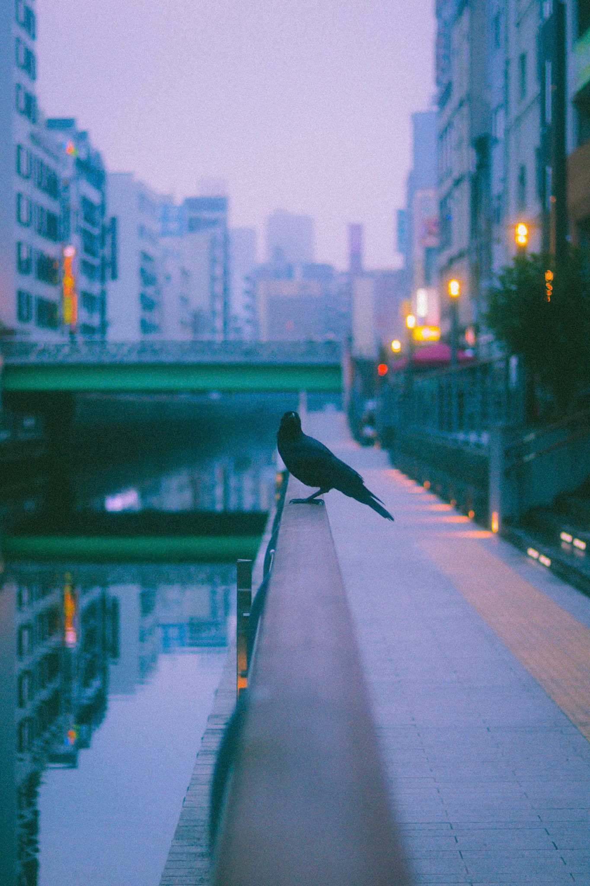
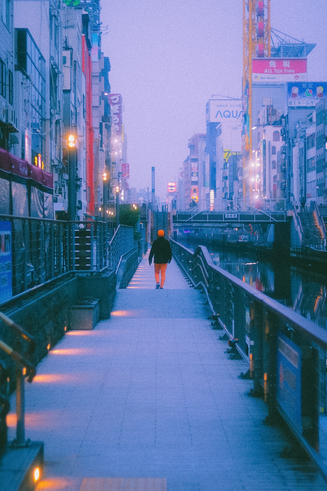
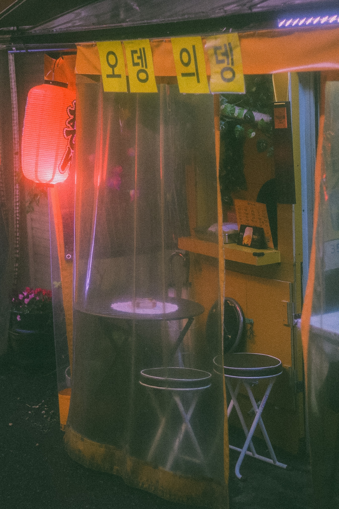
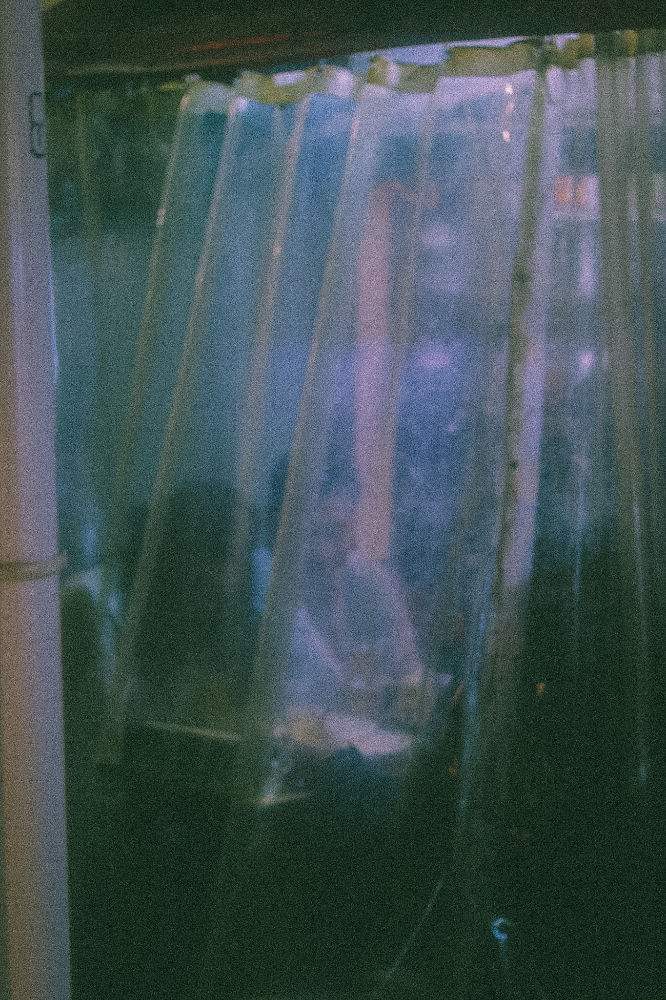
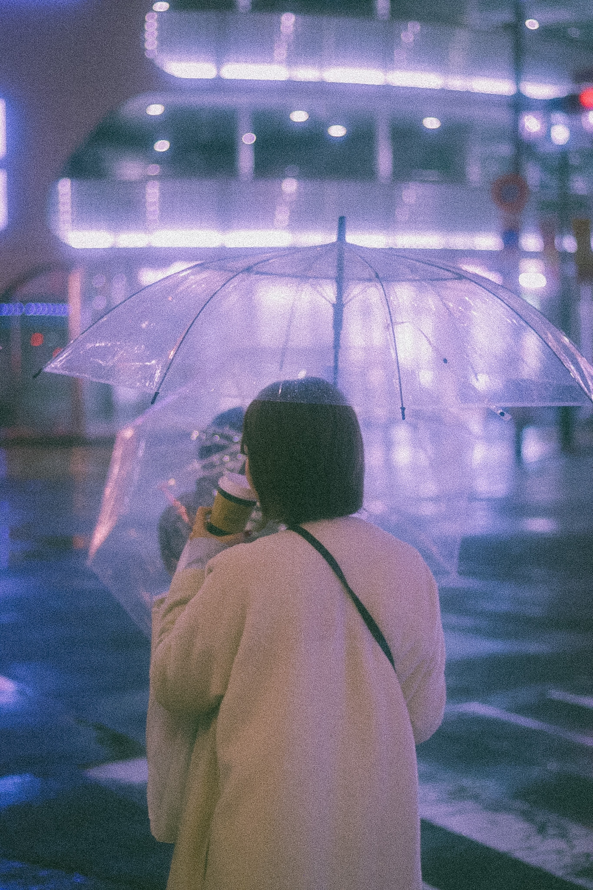
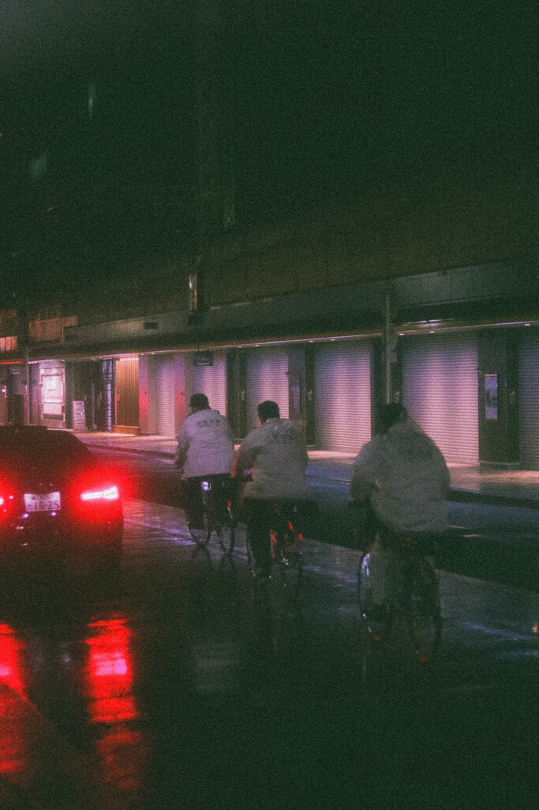
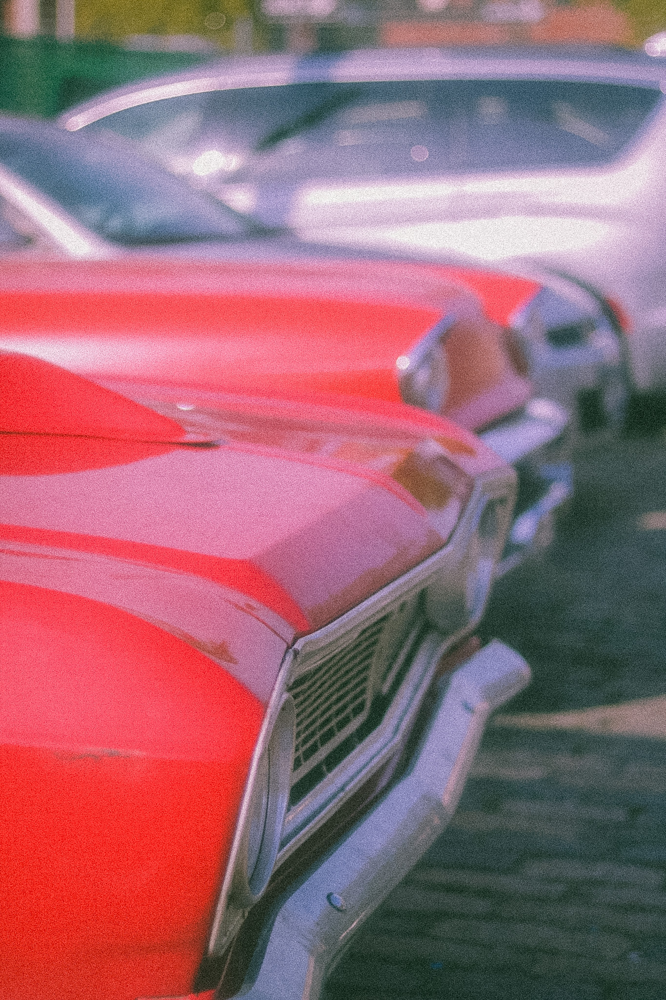
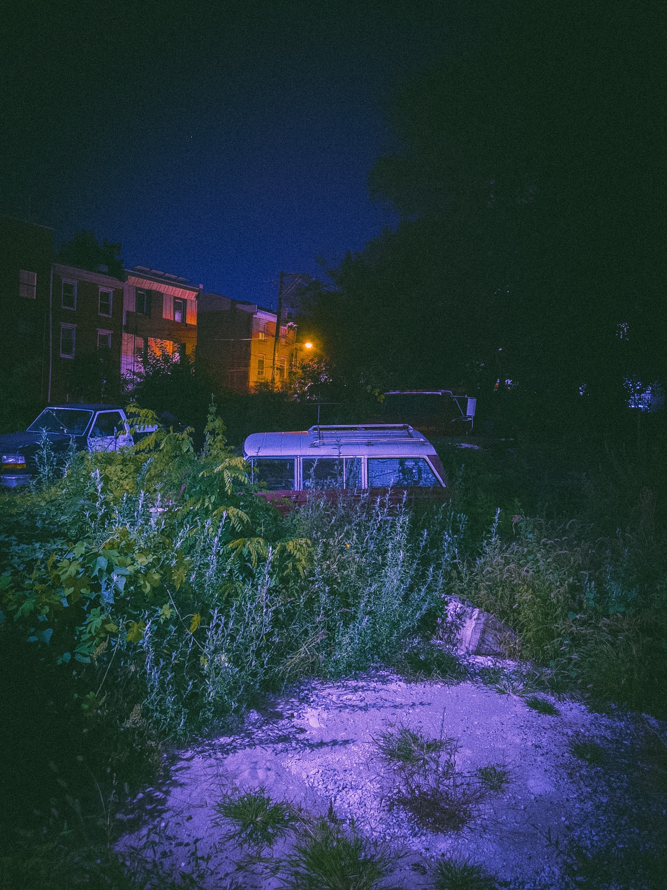
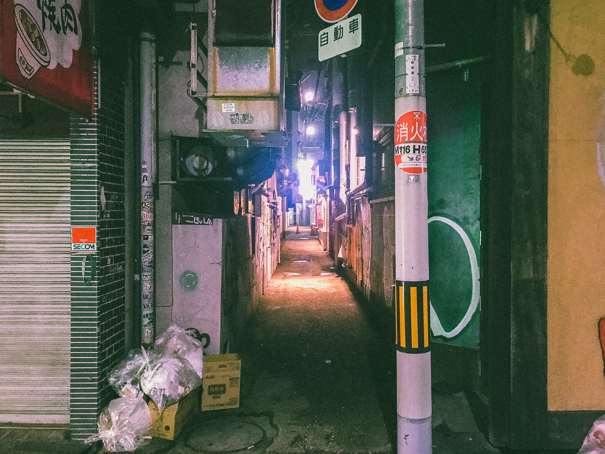
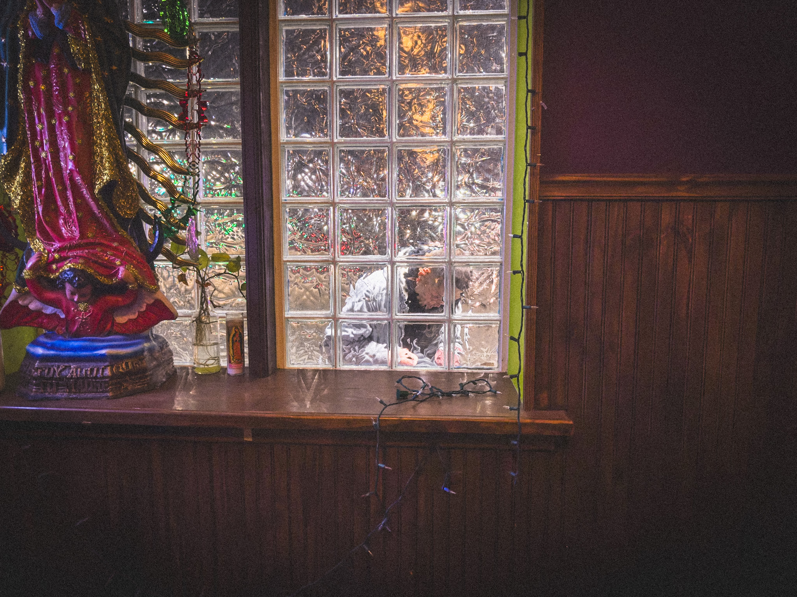
I got into photography in a pretty humble way. It started as a way to impress my photographer friends when we were hanging out and partying together. Over time that turned into going on adventures with friends — from Tokyo to the Pocono Mountains — and remembering to actually pull out my camera to capture moments I didn't want to forget. What started casually slowly turned into a real appreciation for the craft. Photography began pushing me to see the world more critically: light, composition, and small details that are easy to miss. Outside of photography, most of my time is spent working in software quality assurance and studying software engineering. The attention to detail from that work carries over naturally into photography — patience, observation, and iteration tend to produce the best results in both disciplines. This site is simply a place to collect some of that work.
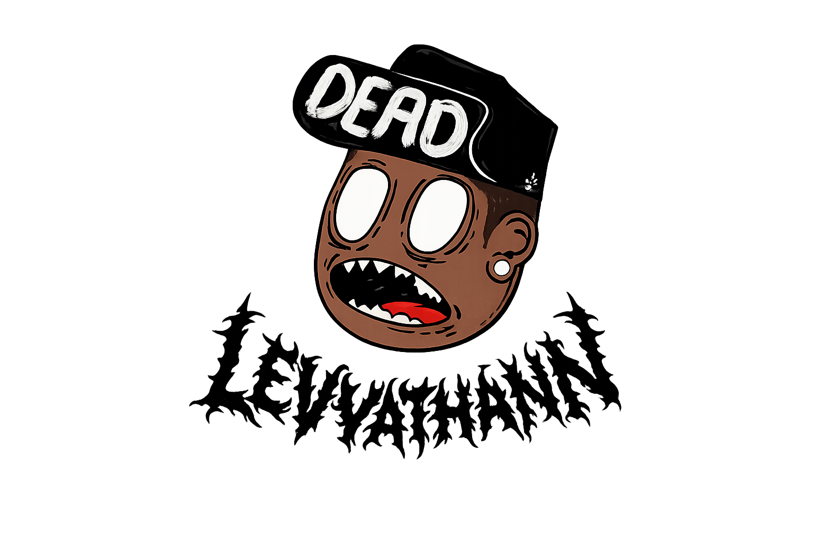